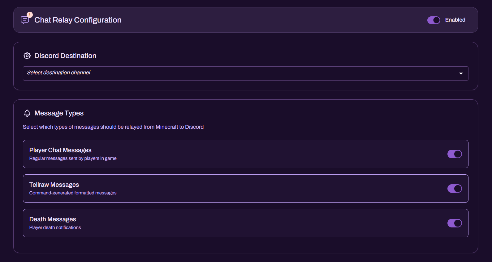

Chat Relay

Chat Relay is a two-way communication bridge between your Minecraft Bedrock Realm chat and a selected Discord channel. It is designed to keep staff and community members aligned in real time, reducing platform switching, improving response time, and providing better visibility during incidents and events.
What Chat Relay Relays
Chat Relay can relay multiple categories of activity from Minecraft to Discord, depending on your configuration:
- Player Chat Messages - standard messages sent by players in Realm chat
- Tellraw Messages - command-generated formatted outputs (announcements, scripted events, systems output)
- Death Messages - player death notifications for gameplay visibility and moderation review
- Player Emotes - player emotes performed in-game (useful for social visibility and activity context)
Note: Chat Relay is a communications utility. It does not independently "secure" or "protect" a Realm. All relayed content remains subject to your Realm rules and Discord policies.
Requirements
To use Chat Relay reliably, ensure the following are in place:
- A Realm connected to Realm Bot via the authorised account-linking flow
- A Discord channel designated for relay output (strongly recommended)
- Any required in-game execution components for your deployment (for example, if your configuration requires an in-game relay presence)
How to Set Up
Open the Chat Relay module inside the Realm Bot Dashboard.

Enable Chat Relay using the main toggle.
Set the Discord Destination channel (this is where Realm messages will be posted).
Under Message Types, enable the categories you want relayed:
- Player Chat Messages
- Tellraw Messages
- Death Messages
- Player Emotes
Once enabled, relay output begins when relevant events occur in the Realm.
Anti-Spam Configuration
Chat Relay includes an Anti-Spam system designed to reduce Discord-side spam and prevent the relay channel from being flooded during high activity or abuse attempts.
The anti-spam controls apply a simple threshold rule:
- Message Threshold - the maximum number of messages allowed before the system triggers
- Window (seconds) - the time window used to count messages
Example logic:
- If Threshold = 10 and Window = 10 seconds, then more than 10 relay events within 10 seconds will trigger the anti-spam behaviour for that window.
Operational guidance:
- Start conservative for public communities (e.g., 10-15 messages in 10-15 seconds)
- Increase thresholds for high-volume servers where relay spam is expected during events
- Pair anti-spam with Discord slowmode if your relay channel is public-facing
Important: Setting threshold/window to extremely low values can suppress legitimate activity. Tune this gradually based on real traffic.
Player Emotes
When Player Emotes are enabled, Chat Relay will relay emotes performed by players in-game to the Discord destination channel.
This is useful for:
- giving staff a clearer picture of in-game interaction (especially social spaces)
- improving community "presence" in Discord without joining in-game
- reinforcing activity awareness during events
Recommendations:
- Enable Emotes only if your relay channel is community-facing or if staff explicitly want behavioural context
- Disable Emotes in staff-only operational channels where signal-to-noise is critical
Recommended Configuration
For a clean, professional relay channel that remains usable during peak activity:
- Use a dedicated channel such as
#realm-chat,#chat-relay, or#realm-live. - Enable only the message types you actually need:
- Public communities: Player Chat + (optional) Death Messages + (optional) Emotes
- Staff operations: Player Chat + Tellraw (systems/events), usually without Emotes
- Enable Anti-Spam if your Realm experiences bursts of activity or repeated disruption attempts.
- Treat the relay channel as an extension of in-game chat; enforce the same rules.
Discord Permissions
Realm Bot must have these permissions in the destination channel:
- View Channel
- Send Messages
- Read Message History
Recommended (depending on formatting/output):
- Embed Links (if relay uses embed-style output in your deployment)
If relay output does not appear, channel permissions should be the first thing verified.
Troubleshooting
Nothing is relaying
Check the following in order:
- Chat Relay is enabled for the correct Realm
- The correct Discord Destination channel is selected
- Realm Bot has View Channel + Send Messages permission
- Any required in-game dependencies for your configuration are online/connected
Relay is too noisy
- Disable Emotes
- Enable Anti-Spam with a moderate threshold/window
- Consider Discord slowmode
- Restrict who can speak in the relay channel (if Discord -> Realm relaying is enabled in your setup)
Messages appear delayed or inconsistent
- Confirm the Realm is stable and the relay account/session is not disconnecting
- Ensure the anti-spam threshold is not suppressing legitimate output during normal use